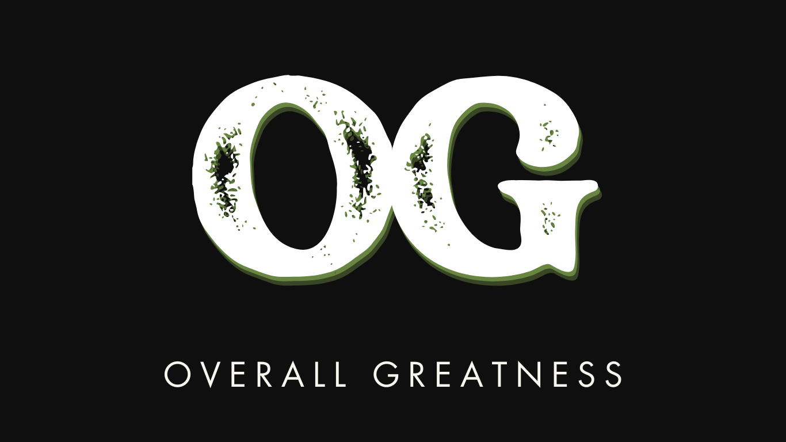

01 / INDIVIDUALREFINE.
✦
PERSONALISED · 1-TO-1
Individual football coaching
Training shaped around your ability, development needs and goals. Focused work on the small details that improve your game.
Explore individual coaching ↗
OVERALLINDIVIDUAL COACHING × PLAYER PROGRESSION
More than just football coaching. Helping young players become technically better, more confident and more intelligent footballers.
01 — COACHING WITH PURPOSE
All ages · £25 per hour
St Mary Cray / Orpington, Bromley.
PERSONALISED · 1-TO-1
Training shaped around your ability, development needs and goals. Focused work on the small details that improve your game.
Explore individual coaching ↗SPECIALIST · TECHNICAL DEVELOPMENT
Handling, diving, positioning and distribution. Build the decision-making and confidence to perform in match situations.
Explore goalkeeper coaching ↗STRUCTURED · GAME-FOCUSED
Develop ball mastery, passing, attacking and movement. Learn with other players and build a stronger understanding of teamwork.
Explore group coaching ↗AT THE HEART OF EVERY SESSION
Understand your strengths. Work on your weaknesses. Develop the confidence to bring your progress into matches.
02 — THE OVERALL GREATNESS WAY
Development is a process. We focus on the player, identify the detail that needs work, and connect the improvement to the game.
Find your next step ↗See the player’s initial attempt and understand what is happening.
Make the development focus clear and specific to the player.
Use individual attention and practical guidance to refine the technique.
Repeat the action and compare it with the starting point.
Apply the learning to decisions and situations that happen in matches.
03 — MEET OVERALL GREATNESS
Co-founded by Femi Adegoke and his brother, Overall Greatness is a football coaching and player development brand dedicated to unlocking the potential of young footballers.
Our focus brings together quality coaching, individual attention and a clear direction for improvement — developing technical ability, confidence and understanding of the game.
THE LONG-TERM VISION
Our ambition is to build on coaching with player development programmes, specialist goalkeeper provision, performance analysis, football education and future pathways in the game.
These are future ambitions. Scouting, academy placement and progression opportunities are not current service commitments or guarantees.
04 — GOOD TO KNOW
Individual coaching focuses on personal development needs. Goalkeeper coaching specialises in the position, while group coaching develops technical skills and teamwork alongside other players.
It means understanding a player’s strengths and weaknesses, working on technical improvements and building the confidence and game awareness to use those skills in matches.
Football education is one of our core pillars. Coaching tips, demonstrations and training insights help young players and parents understand what purposeful development looks like.
Coaching is available for all ages in St Mary Cray / Orpington, in the Bromley area of South East London, at £25 per hour. Exact venue and session availability will be confirmed when booking. Use the booking form to prepare an email request, or contact overallgreatnessacademy@gmail.com. Your session is confirmed only once we reply.
START YOUR DEVELOPMENT
All ages · £25 per hour
St Mary Cray / Orpington, Bromley.
THE NEXT STEP FOR OG
Parents can manage their children’s coaching. Adult players can manage their own profile, four-session packages, bookings and progress.
Open portal preview ↗Demonstration only. For current coaching enquiries, use the email request form below.